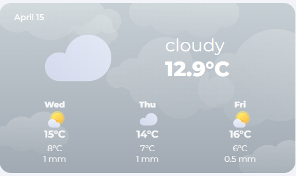

Weather Card
The weather card is a dynamic card that changes based on conditions. There is a different color, image and icons for the different weather conditions.

Usage
Custom Sensor needed
Before you can use this card, you need to have a custom sensor that gets the forecast data. You can create a custom sensor inside your configuration.yaml or create a templates.yaml file in the root of Home Assistant and add template: !include templates.yaml to your configuration.yaml. Then, add this code underneath, save the file and reload your configuration.
- trigger:
- trigger: time_pattern
hours: /1
- trigger: event
event_type: event_template_reloaded
action:
- action: weather.get_forecasts
target:
entity_id:
- weather.home
data:
type: daily
response_variable: dailyforecast
sensor:
- name: Weather Entity Forecast
unique_id: weather_entity_forecast
state: "{{ states('weather.home') }}"
icon: mdi:hours-24
attributes:
condition: "{{ states('weather.home') }}"
cloud_coverage: "{{ state_attr('weather.home','cloud_coverage') }}"
temperature: "{{ state_attr('weather.home','temperature') }}"
wind_speed: "{{ state_attr('weather.home','wind_speed') }}"
wind_gust: "{{ state_attr('weather.home','wind_gust_speed') }}"
dew_point: "{{ state_attr('weather.home','dew_point') }}"
wind_bearing: "{{ state_attr('weather.home','wind_bearing') }}"
datetime: "{{ dailyforecast['weather.home'].forecast[0].datetime }}"
forecast: "{{ dailyforecast['weather.home'].forecast }}"
Now, you should have a new sensor called sensor.weather_entity_forecast which you can use as entity in this card.
Note: If you want to use another weather provider like Buienradar or Accuweather, just replace weather.home with your desired intergration.
View code
- type: custom:button-card
template: hc_weather_card
entity: sensor.weather_entity_forecast
variables:
show_forecast: false
Variables
| Variable | Default | Required | Description |
|---|---|---|---|
| label_left | returns date | No | text in left top corner |
| label_right | No | text in right top corner | |
| show_forecast | true | No | shows or hides the forecast |
Contribution
- Coasting24 did most of the work